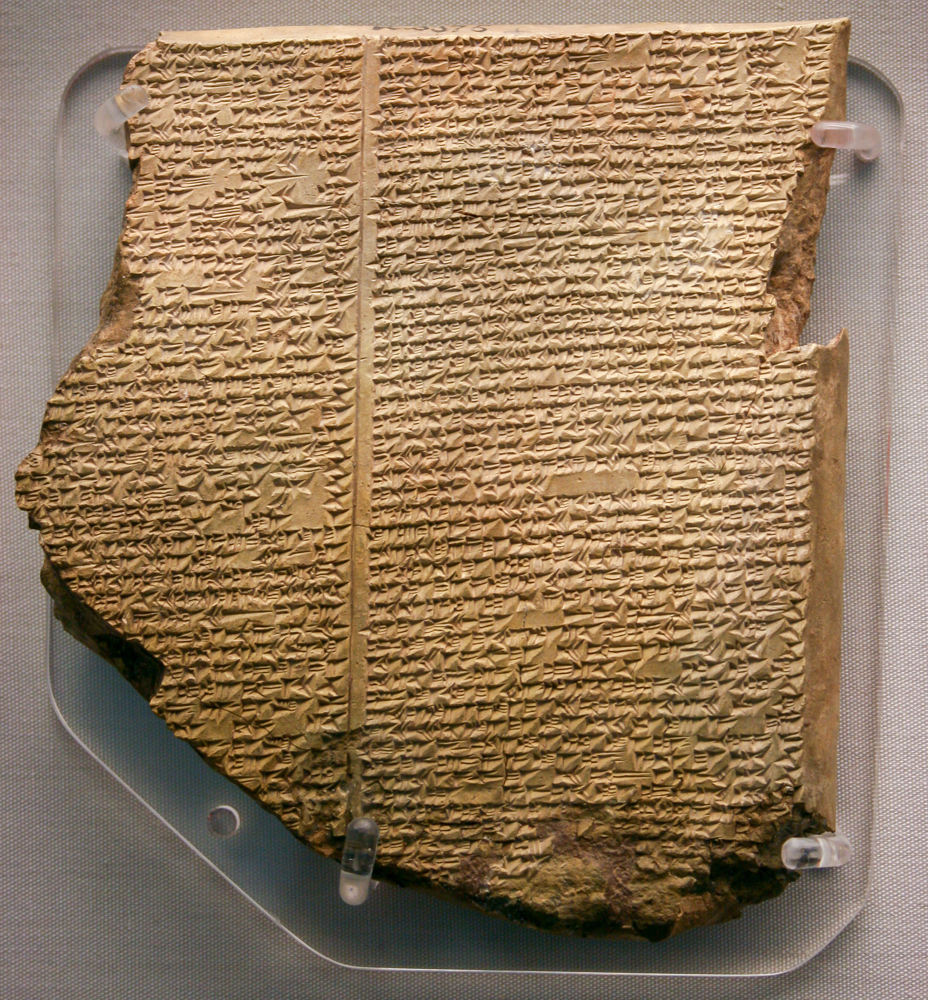

¿Cubrió el agua toda la Tierra? La geología responde que no. Pero las tablillas de Mesopotamia guardan una sorpresa mayor: el relato del diluvio es más antiguo que la Biblia, y no nació en ella.
Pocos relatos bíblicos son tan universales como el del Diluvio: Dios envía un cataclismo de agua, y una familia justa se salva en un arca con los animales. Es una historia grabada en la imaginación de Occidente. Y es también uno de los casos donde la ciencia y la arqueología tienen más que decir —y donde lo que dicen es más fascinante de lo que uno esperaría—.
Empecemos por lo más directo: ¿hay evidencia de una inundación que cubriera toda la Tierra a la vez, en un pasado reciente? La respuesta de la geología es clara: no. No existe una capa global de sedimentos de inundación, ni el agua suficiente en el planeta para cubrir las montañas, ni un registro fósil compatible con que toda la vida terrestre descendiera de los ocupantes de un solo barco hace unos pocos miles de años.
Esto no es una opinión aislada: es la conclusión convergente de la geología, la paleontología, la biología y la física. Un diluvio global y reciente dejaría huellas inconfundibles en todas partes, y no están. Ahora bien, que no hubiera un diluvio global no significa que el relato saliera de la nada. Al contrario: tiene un origen muy concreto, y muy humano.
La ciencia descarta un diluvio que cubriera el planeta entero: no hay agua suficiente, ni capa de sedimentos global, ni registro fósil compatible. Pero el relato sí tiene una raíz real, en las inundaciones y los mitos de Mesopotamia.
En 1872, un joven asiriólogo del Museo Británico llamado George Smith estaba descifrando tablillas cuneiformes traídas de Nínive. Al leer una de ellas, se encontró con algo que no esperaba: el relato de un gran diluvio, con un héroe que construye un barco, salva a su familia y a los animales, y suelta aves para buscar tierra firme. Era, punto por punto, asombrosamente parecido a la historia de Noé —pero escrito por babilonios—. Se cuenta que Smith, exaltado, empezó a quitarse la ropa por la sala. La noticia causó conmoción en la Inglaterra victoriana.

Ese texto es la tablilla XI de la Epopeya de Gilgamesh. En ella, el héroe Utnapishtim cuenta cómo los dioses decidieron destruir a la humanidad con un diluvio, cómo el dios Ea le advirtió y le ordenó construir un gran barco, cómo embarcó a su familia y a los animales, y cómo, tras el diluvio, soltó una paloma, una golondrina y un cuervo para comprobar si las aguas habían bajado. Al final, ofreció un sacrificio, y los dioses se congregaron en torno a él. Cualquiera que conozca el relato de Noé reconocerá el molde.
Aquí está el dato decisivo: estos relatos mesopotámicos son más antiguos que el texto bíblico. La versión del diluvio en Gilgamesh proviene, a su vez, de un poema todavía más viejo, la Epopeya de Atrahasis, cuyas tablillas se remontan a alrededor del 1650 a.C. —siglos antes de que se compusieran los textos del Génesis—. Y detrás de Atrahasis hay aún relatos sumerios anteriores.
La conclusión de los especialistas no es que "la Biblia copió", dicho con ánimo de rebajarla. Es algo más matizado y más interesante: existía en todo el Cercano Oriente una tradición compartida sobre un gran diluvio primordial, y cada cultura la reelaboró con su propia teología. Los autores bíblicos tomaron ese molde común y lo transformaron para expresar algo muy distinto de lo que decían los babilonios.
Comparar las versiones es revelador, porque las diferencias muestran la intención de cada una. En el relato babilónico, los dioses envían el diluvio casi por capricho —la humanidad hacía demasiado ruido y no los dejaba dormir—, actúan por miedo y se pelean entre sí. En el Génesis, en cambio, hay un solo Dios, que actúa por una razón moral (la maldad humana) y que establece después una alianza. El relato deja de ser sobre dioses caprichosos y pasa a ser sobre justicia, pecado y compromiso.
Dicho de otro modo: el Génesis no inventa el diluvio, pero le da un sentido nuevo. Y esa es justamente la clave que esta serie quiere iluminar. Entender que el relato tiene una prehistoria mesopotámica no lo vacía: muestra cómo un pueblo tomó una historia que todos conocían y la reescribió para hablar de su propio Dios y de su propia visión moral del mundo. La razón por la que tantas culturas tienen relatos de inundaciones no es un misterio sobrenatural: las civilizaciones antiguas nacieron junto a grandes ríos —el Tigris, el Éufrates— que se desbordaban con furia. Una gran inundación local pudo sentirse, para quien la vivía, como el fin del mundo entero.
El agua cubrió toda la Tierra hace unos miles de años; los parecidos con Gilgamesh se explican porque todos los pueblos recuerdan el mismo suceso real.
No hubo diluvio global (la geología lo descarta). El relato es una tradición mesopotámica muy anterior, reelaborada en el Génesis con un sentido teológico propio.
Lectura: que no hubo un diluvio global reciente es consenso científico firme. Que el relato bíblico depende de tradiciones mesopotámicas anteriores (Gilgamesh, Atrahasis) es consenso sólido entre los especialistas. El debate real está en los detalles de esa dependencia, no en su existencia.
El descubrimiento del relato del diluvio en la tablilla XI de Gilgamesh lo hizo George Smith en 1872, a partir de las tablillas de la biblioteca de Asurbanipal (Nínive). La Epopeya de Atrahasis, con tablillas de ca. 1650 a.C., es hoy considerada la fuente más probable del relato bíblico, según trabajos como los de Andrew George y las síntesis divulgadas por TheTorah.com y BioLogos.
La imposibilidad de un diluvio global reciente es consenso en geología y paleontología. Existen hipótesis sobre grandes inundaciones locales reales (por ejemplo, la del Mar Negro propuesta por Ryan y Pitman) como posible poso histórico de los mitos, pero son objeto de debate y no equivalen a un diluvio universal.
Esta entrega distingue el hecho (ausencia de diluvio global; anterioridad de los relatos mesopotámicos) de la interpretación teológica de cada tradición, que no es objeto de la ciencia. Se expone la lectura literal con respeto, sin ridiculizarla.